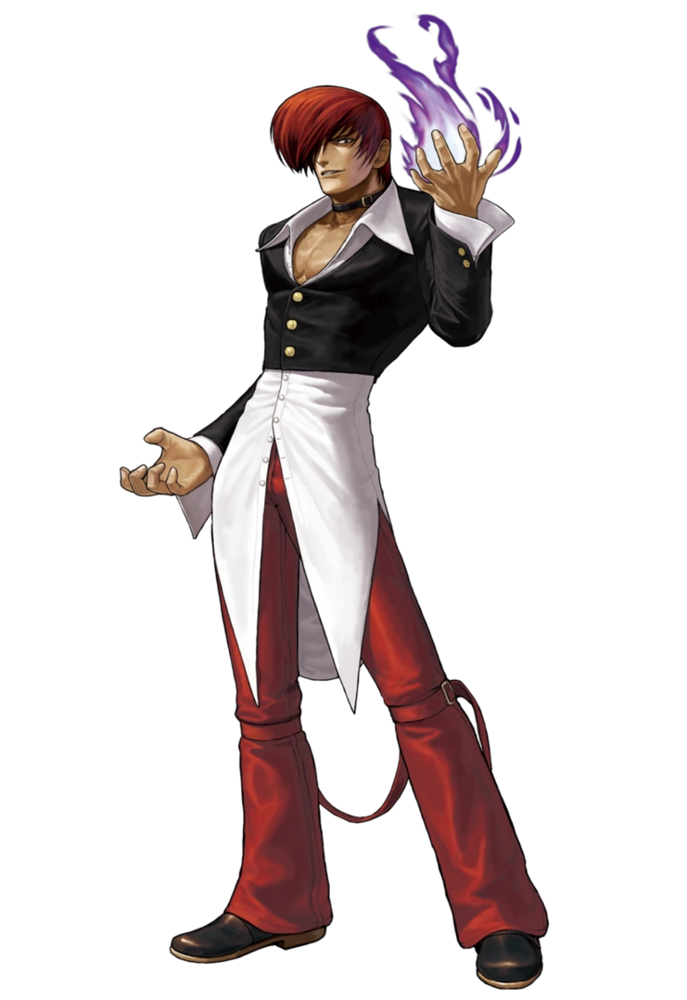

Informações do personagem
-
Aparece pela primeira vez em The King Of Fighters '95.
-
Herdeiro de um dos três clãs que selaram Orochi.
-
Capaz de manipular chamas.
-
Principal rival de Kyo Kusanagi.
No anime é dublado por Alfredo Rollo e por Mario Eduardo